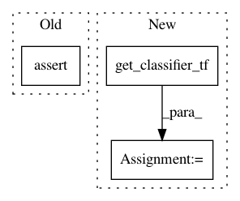

24cc9536e4969716b3080498426af8e47dee7907,tests/classifiers/test_tensorflow.py,TestTFClassifier,test_loss_gradient,#TestTFClassifier#,125
Before Change
grads = self.classifier.loss_gradient(x_test, y_test)
self.assertTrue(np.array(grads.shape == (NB_TEST, 28, 28, 1)).all())
self.assertNotEqual(np.sum(grads), 0)
def test_layers(self):
// Get MNIST
(_, _), (x_test, _) = self.mnist
After Change
sess.close()
def test_loss_gradient(self):
classifier, sess = get_classifier_tf()
gradients = classifier.loss_gradient(self.x_test, self.y_test)
self.assertTrue(gradients.shape == (NB_TEST, 28, 28, 1))
expected_gradients_1 = np.asarray([0.00279603, 0.00266946, 0.0032446, 0.00396258, -0.00201465, -0.00564073,
In pattern: SUPERPATTERN
Frequency: 5
Non-data size: 3
Instances
Project Name: IBM/adversarial-robustness-toolbox
Commit Name: 24cc9536e4969716b3080498426af8e47dee7907
Time: 2019-08-17
Author: beat.buesser@ie.ibm.com
File Name: tests/classifiers/test_tensorflow.py
Class Name: TestTFClassifier
Method Name: test_loss_gradient
Project Name: IBM/adversarial-robustness-toolbox
Commit Name: 24cc9536e4969716b3080498426af8e47dee7907
Time: 2019-08-17
Author: beat.buesser@ie.ibm.com
File Name: tests/classifiers/test_tensorflow.py
Class Name: TestTFClassifier
Method Name: test_class_gradient
Project Name: IBM/adversarial-robustness-toolbox
Commit Name: 24cc9536e4969716b3080498426af8e47dee7907
Time: 2019-08-17
Author: beat.buesser@ie.ibm.com
File Name: tests/classifiers/test_tensorflow.py
Class Name: TestTFClassifier
Method Name: test_fit_generator
Project Name: IBM/adversarial-robustness-toolbox
Commit Name: 24cc9536e4969716b3080498426af8e47dee7907
Time: 2019-08-17
Author: beat.buesser@ie.ibm.com
File Name: tests/classifiers/test_tensorflow.py
Class Name: TestTFClassifier
Method Name: test_layers
Project Name: IBM/adversarial-robustness-toolbox
Commit Name: 24cc9536e4969716b3080498426af8e47dee7907
Time: 2019-08-17
Author: beat.buesser@ie.ibm.com
File Name: tests/classifiers/test_tensorflow.py
Class Name: TestTFClassifier
Method Name: test_predict